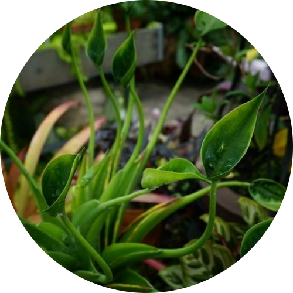

Alocasia Tiny Dancer
Water: Once or twice a week.
The Alocasia Tiny Dancer enjoys lots of light, it does not tolerate harsh, direct sunlight which can burn the foliage. It prefers the filtered or indirect light of its natural environment. Water regularly to keep the soil consistently moist. In the summer, you may need to water this plant once or twice a week, while in the winter you can reduce watering.